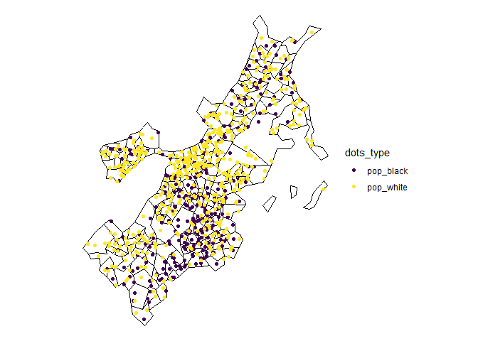
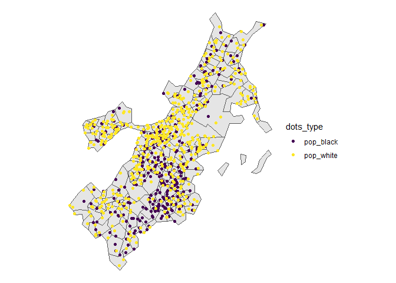

dots provides tools to make dot density maps.
Installation
You can install the stable version of dots from CRAN with:
install.packages('dots')You can install the development version of dots from GitHub with:
remotes::install_github('christopherkenny/dots')Example
The main function in dots is dots().
library(dots)
library(sf)
#> Linking to GEOS 3.13.1, GDAL 3.11.0, PROJ 9.6.0; sf_use_s2() is TRUE
library(ggplot2)
data('suffolk')
dots::dots(suffolk, c(pop_black, pop_white), divisor = 1000, engine = engine_sf_random) +
scale_color_viridis_d() +
theme_void()
You can also use dots_points() to only make the randomized points.
dots::dots_points(suffolk, c(pop_black, pop_white), divisor = 1000, engine = engine_sf_random) |>
ggplot() +
geom_sf(data = suffolk) +
geom_sf(aes(color = dots_type)) +
scale_color_viridis_d() +
theme_void()